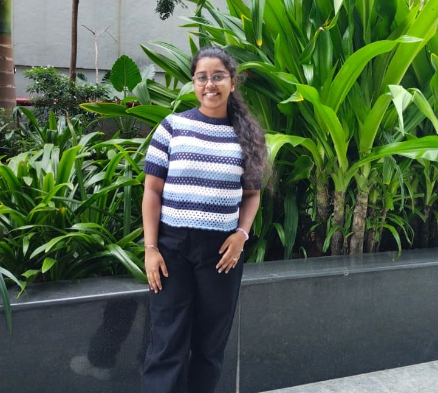

Programming
JavaJavaScriptData Structures & AlgorithmsObject-Oriented Programming
Aspiring Software Engineer &
Creative Problem Solver
Turning curiosity into code and ideas into real-world impact. Building thoughtful digital experiences, one line at a time.

I’m Manasa, a Computer Science Engineering student at Bhoj Reddy Engineering College for Women, with a love for building things that make a difference.
My foundation is in Java, SQL, and web development, and my curiosity has led me to explore machine learning and computer vision. From making waste sorting smarter to making communication more accessible, I enjoy solving real-world problems with thoughtful technology.
Beyond the screen, I’m a collaborative thinker, a constant learner, and someone who believes that the best ideas start with a simple “what if?”
Current B.Tech CGPA
Real-world impact projects
Professional certifications
Expected graduation
A blend of technical foundations, hands-on tools, and a problem-solving mindset.
Exploring what technology can do for people and the planet.
A smarter approach to sorting waste. An image-recognition web application that makes everyday sustainability a little easier.
Bridging the communication gap. A real-time translator that turns hand gestures into meaningful text and speech.
Bhoj Reddy Engineering College for Women
Hyderabad, Telangana
Narayana Junior College
Hyderabad
St. Francis Girls High School
GPA · 10 / 10Oracle
IBM
Tata
NPTEL
Have an opportunity, an interesting idea, or just want to connect? I’d love to hear from you.